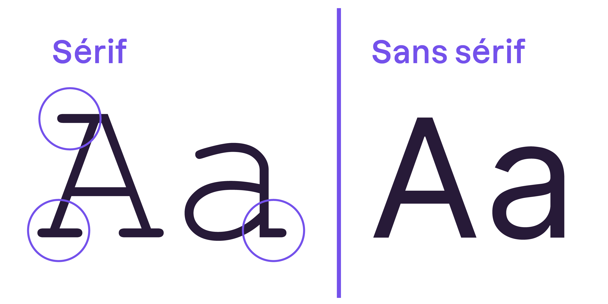

6. Plus de propriétés¶
Jusqu’ici, nous n’avons vu que des propriétés CSS associées aux couleurs: color et background-color. Il est temps d’élargir un peu notre vocabulaire !
Plus de couleurs¶
Avant d’aller plus loin, vous devez savoir que s’il est possible de donner une couleur en toutes lettres (par exemple: blue), les propriétés CSS acceptent aussi des codes hexadécimaux (#FFC8D3) et RGB (rgb(250, 25, 118)).
Ainsi, les codes suivants sont équivalents:
color: blue;
color: #0000ff;
color: rgb(0, 0, 255);
Color picker vous permet de facilement faire votre choix parmi toutes les couleurs possibles.
Appliquez une couleur de fond avec background-color¶
Nous avons rapidement vu la propriété background-color afin de mettre une couleur de fond à du texte. Mais elle permet de mettre une couleur de fond à n’importe quoi !
Et pourquoi pas à toute la page ?
Exercice 1
Prenez le site sur la pizza et faites les changements suivants pour toute la page:
Couleur de fond noire
Texte en blanc
Titre principal en violet
Solution
body {
background-color: black;
color: white;
}
h1 {
color: purple;
}
L’héritage de propriétés
En CSS, si vous appliquez un style à une balise, toutes les balises qui se trouvent à l’intérieur prendront le même style. Cela s’appelle l’héritage. Ainsi, toutes les balises qui se trouvent dans <body> héritent de ses propriétés, d’où le changement pour toute la page.
C’est d’ailleurs de là que vient le nom “CSS”, qui signifie “Cascading Style Sheets”, c’est-à-dire “Feuilles de style en cascade”. Les propriétés CSS sont héritées en cascade.
Ajoutez une image de fond avec background-image¶
Une “image de fond” ne s’applique pas forcément à la page entière. On peut aussi mettre une image de fond derrière des titres, ou des paragraphes uniquement.
Voyez déjà ce que donne background-image appliqué à <body> sur ce lien CodePen.
Le résultat n’est pas parfait et l’image se répète à l’horizontal. Pour arriver à un résultat qui vous plait, il existe plusieurs autres propriétés très utiles:
background-repeat permet de définir si et comment votre image se répète.
background-size permet de définir la taille de l’image.
background-position permet d’indiquer la position de l’image.
background-attachment définit si la position de l’image est fixe ou si elle peut défiler avec le bloc englobant.
Cela fait pas mal d’informations d’un coup. Je vous invite à les tester mais il est inutile de retenir toutes les propriétés par coeur. Les informaticiens ont une mémoire très limitée, mais accès à Internet.
Exercice 2
Rendez-vous à nouveau sur ce CodePen.
Au lieu d’appliquer une image de fond à toute la page, vous allez l’appliquer uniquement au titre afin de faire une bannière.
Voici la marche à suivre:
Ajouter une balise
<div class="banniere> </div>autour du titre de la page. Cela permet de créer un nouveau bloc pour la bannière qui va englober votre titre.Créez la classe
.banniereen CSS et utilisezbackground-imagepour appliquer l’image de fond de votre choix.Centrez le titre et mettez le en blanc.
Ajoutez la propriété
background-size: cover;afin que l’image soit redimensionnée au mieux pour couvrir le titre.Ajoutez la propriété
padding: 100pxpour “faire gonfler” la bannière (nous verrons cette propriété plus tard).Ajoutez
background-position: center;pour centrer l’image de fond autour du titre.
Si le résultat ne vous convient pas (en fonction de l’image choisie), continuez à faire des tests jusqu’à avoir un résultat satisfaisant ou appelez votre enseignant.
Solution
Voici le code HTML:
<body>
<div class="banniere">
<h1>Mon blog</h1>
</div>
<p>Ceci est le contenu de mon premier paragraphe</p>
<p>Ceci est le contenu de mon deuxième paragraphe</p>
</body>
Et le code CSS:
.banniere {
background-image: url(https://www.justgeek.fr/wp-content/uploads/2023/01/mettre-fond-ecran-anime-pc.jpg);
background-size: cover;
background-position: center;
padding: 100px;
}
h1 {
color: white;
text-align: center;
}
Créez des dégradés avec linear-gradient¶
Le code suivant permet de créer un dégradé:
background: linear-gradient(90deg, #8360c3, #2ebf91);
Le plus simple pour s’en servir est de passer par UI Gradients et de simplement copier le code CSS correspondant au dégradé souhaité.
Jouez sur la transparence avec opacity¶
La propriété opacity permet de rendre n’importe quel élément de votre page plus ou moins transparent.
opacity: 0.5; /* Valeurs entre 0.0 (invisible) et 1.0 (opaque par défaut) */
Apparence du texte¶
Dans cette section, nous allons nous attaquer à la mise en forme du texte.
Changez la taille de votre texte avec font-size¶
Pour modifier la taille du texte, on utilise la propriété CSS font-size et ensuite, on indique:
une taille absolue en pixels (déconseillé car ne s’adapte pas à l’écran)
une taille relative (recommandé car s’adapte à l’écran)
Commençons par la taille absolue. Pour avoir un texte d’exactement 16 pixels de hauteur, vous devez écrire:
font-size: 16px;
Concernant la taille relative, le méthode la plus fréquente consiste à indiquer la taille en em:
Le texte a une taille normale avec
1em.Le texte est 1.3x plus grand avec
1.3em.Le texte est plus petit avec une valeur inférieure à 1, comme
0.8em.
Exercice 3
Vous pouvez tester différentes tailles relatives sur ce lien CodePen.
Le problème des tailles absolues
16 pixels est une taille standard pour lire un texte mais peut ne pas suffire selon l’écran sur lequel il s’affiche. Imaginez que vous projetez votre site sur l’écran d’un stade qui possède une très bonne résolution (nombre de pixels par pouce), vos 16 pixels apparaîtront minuscules !
Une taille relative quant à elle apparaîtra toujours identique peu importe la résolution de l’écran.
Changez la police de votre texte avec font-family¶
La propriété à utiliser se nomme font-family:
font-family: Verdana; /* Valeur par défaut */
Pour qu’une police s’affiche correctement chez le visiteur du site, il faut qu’il la possède ! Les polices suivantes sont les plus sûres car tous les navigateurs les possèdent par défaut:
Arial (sans-serif)
Verdana (sans-serif)
Tahoma (sans-serif)
Trebuchet MS (sans-serif)
Times New Roman (serif)
Georgia (serif)
Garamond (serif)
Courier New (monospace)
Brush Script MT (cursive)
Exercice 4
Retournez sur CodePen et modifiez la police de l’élément 3.
Solution
.grand {
font-size: 1.3em;
font-family: Brush Script MT;
}
Si vous en voulez d’autres, faites un tour sur Google Fonts et appelez votre enseignant pour savoir comment les intégrer à votre site.
Avec ou sans sérif ?
Le sérif désigne l’empattement situé à l’extrémité des caractères. Choisir une police de caractères sans sérif est plus judicieux en termes d’accessibilité, car c’est plus facile à lire.
Italique, gras, souligné¶
Italique et gras en HTML
Rappelez-vous, les balises <em> </em> et <strong> </strong> servent respectivement à mettre un mot en italique ou en gras afin de mettre de l’importance sur un mot. Les robots qui parcourent le web pour référence votre site en tiennent compte !
C’est donc la manière à privilégier si vous souhaitez donner de l’importance à certains mots clé sur votre site. Sinon, voyons comment utiliser le CSS pour simplement changer la forme du texte.
La propriété font-style permet de mettre du texte en italique:
font-style: normal; /* Valeur par défaut */
font-style: italic; /* Valeur pour mettre en italique */
La propriété font-weight permet de choisir l’épaisseur du texte:
font-weight: normal; /* Valeur par défaut */
font-weight: bold; /* Valeur pour mettre en gras */
font-weight: thin; /* Valeur pour mettre en fin */
La propriété text-decoration permet de souligner ou barrer du texte:
text-decoration: none; /* Valeur par défaut (sauf pour les liens) */
text-decoration: underline; /* Valeur pour souligner */
text-decoration: line-through; /* Valeur pour barrer */
Exercice 5
Retournez sur CodePen et faites en sorte que l’élément 2 soit italique et souligné ainsi que l’élément 4 soit gras et barré.
Solution
.normal {
font-size: 1em;
font-style: italic;
text-decoration: underline;
}
.tres-grand {
font-size: 2.5em;
font-weight: bold;
text-decoration: line-through;
}
Alignez votre texte avec text-align¶
La propriété permet text-align permet de définir l’alignement de votre texte:
text-align: left; /* Valeur par défaut (aligné à gauche) */
text-align: center; /* Valeur pour aligner au centre */
text-align: right; /* Valeur pour aligner à droite */
text-align: justify; /* Valeur pour mettre le texte en justifié */
Rappel justifié
Justifier le texte permet de faire en sorte qu’il prenne toute la largeur possible sans laisser d’espace blanc à la fin des lignes. Les textes des journaux, par exemple, sont toujours justifiés.
Attention
L’alignement ne fonctionne que sur des balises de type block comme p, h1, div, etc.
Aligner le texte d’une balise inline comme a, strong, span n’est pas possible. Et c’est logique, vous n’allez pas aligner quelques mots au milieu d’un paragraphe !
Exercice 6
Retournez sur CodePen et alignez l’élément 1 au centre de la page.
Solution
.petit {
font-size: 0.7em;
text-align: center;
}
Bordures et ombres¶
Vous voulez ajouter une bordure à l’un des éléments de votre page ? CSS propose de nombreuses propriétés pour ça ! Voici les 3 principales:
border-width permet de définir la largeur de la bordure.
border-color permet de définir sa couleur.
border-style permet de définir son style (ex: pointillé).
Il est aussi possible d’utiliser le raccourci border puis de spécifier la largeur, la couleur et le style en une seule fois comme ceci.
Cet exemple montre comment appliquer une bordure bleue en pointillé.
border: 1em dashed blue;
Vous préférez les bordures arrondies ?
border-radius permet d’arrondir les angles de la bordure.
border-radius: 20px;
Vous voulez ajouter de la profondeur à vos éléments ?
box-shadow permet d’ajouter des ombres aux blocs pour leur donner une illusion de profondeur.
Trouver l’effet souhaité
Il n’est pas toujours simple de trouver l’effet d’ombre désiré à tâtons. CSS Scan donne des exemples que vous pouvez simplement copier.
Exercice 7
Rendez-vous sur CodePen et testez un peu ces différentes bordures et ombres.
Survoler des éléments avec :hover¶
Le sélecteur CSS :hover permet de dire que l’on veut modifier les propriétés de style des éléments que l’on survole avec le curseur de la souris.
Le code ci-dessous permet de dire que les liens doivent être surlignés en jaune lorsqu’ils sont survolés. Testez ici.
a:hover {
background-color: yellow;
}
Exercice récapitulatif¶
Exercice récapitulatif
Pas d’exercice à rendre pour ce chapitre !
Prenez ce temps pour avancer sur votre site personnel ou pour avancer dans le parcours.